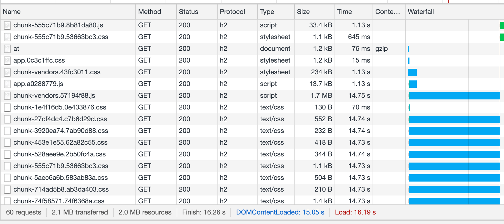
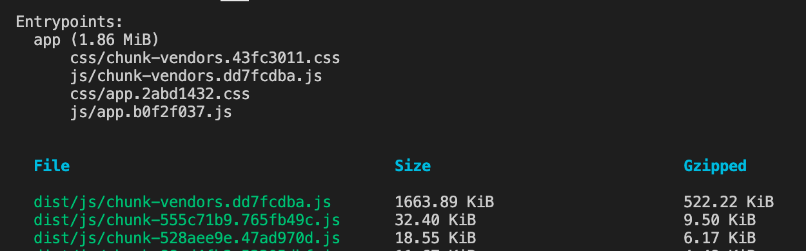
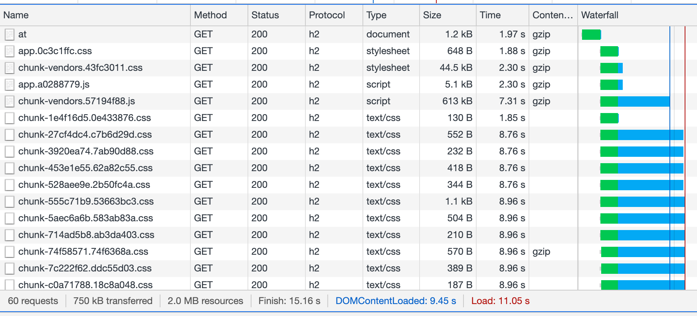
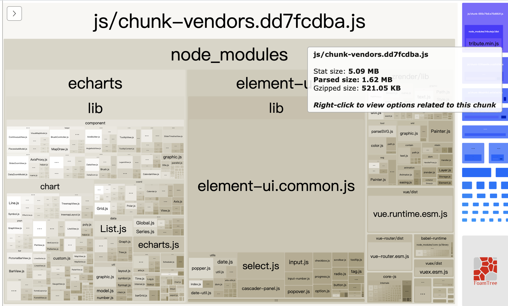
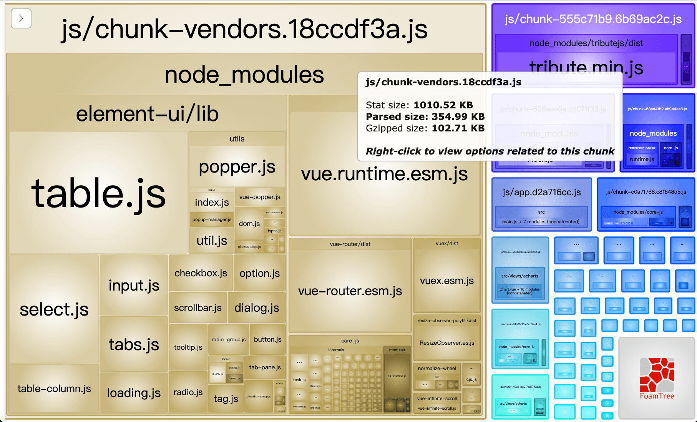
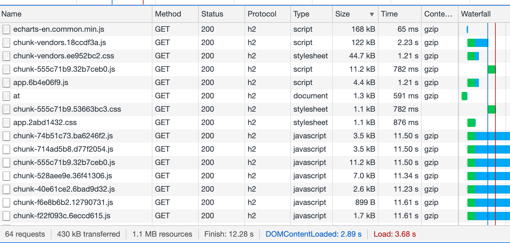
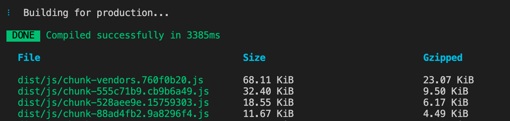
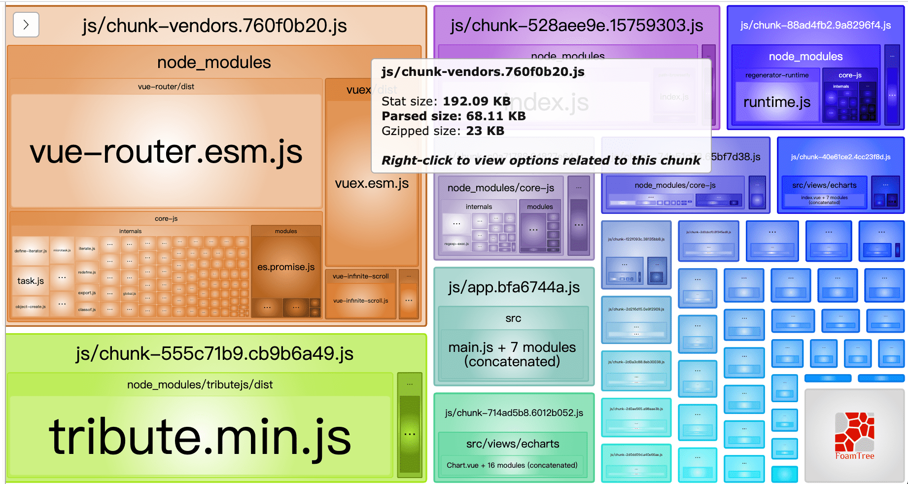
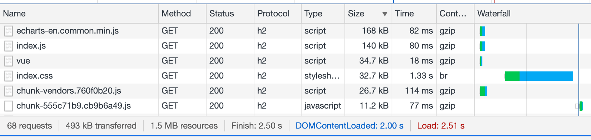
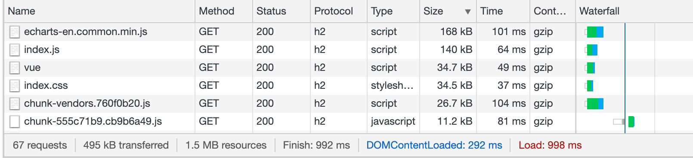

Vue CLI 项目页面打开时间优化：从16秒到2秒内
在日常开发中，经常要写一些 demo 来测试一些功能，于是专门新建了一个 github 仓库来管理，方便积累。这次想着把 vue demo 部署到服务器，方便 PC/手机 实时看效果。于是把 vue-cli 项目 npm run build 后，将 dist 部署到服务器 nginx 下，但发现打开很慢，下面来看看怎么优化。
如下图，DOM 加载完 15 秒，完全加载 16 秒

nginx 开启 gzip - 16s 到 11s
主要是 chunk-vendors.js 接近 1.7M，下载时间较长。npm run build 打包后 log 如下图(这是后面补的图，中间把路由懒加载改了下，size 会比上图里的小一点)，超出建议的 244kB

理论上，nginx 开启 gzip 成功后，文件大小应该是 600多kb，看最上面的 Chrome Network 图里面，vendors 是 1.7M，且 Content-Encoding 那一栏没有 gzip，说明 js,css文件没有开启 gzip 咱们配置下 nginx 服务，开启 gzip
server
{
server_name www.zuoguoqing.com;
# 开启gzip
gzip on;
gzip_vary on;
gzip_min_length 1000;
gzip_comp_level 2;
gzip_types text/plain text/css text/xml text/javascript application/x-javascript application/xml image/jpeg image/gif image/png application/javascript;
location / {
# root html;
# index index.html index.htm;
proxy_pass http://127.0.0.1:3000;
}
}咱们再来看看效果，如下图。vendors.js 文件从 1.7M 变为 600多k，且 Content-Type 那一栏也有了 gzip 标识。
下图可以看出 nginx 开启 gzip 压缩后，加载时间快了 5s。注意网上说的 compresion-webpack-plugin 插件在前端进行 gzip 基本是多此一举。nginx 本身可以配置 gzip 功能，前端不用做 gzip 处理

使用 Vue CLI report 分析 vendor.js
11秒还是有点长，咱们想办法来减少 vendor.js 的体积看看，上面的图里面，gzip压缩后的 venders.js 有 613KB，加载也要 7 秒多。
这里我们要使用 Vue CLI（@vue/cli）自带的 webpack 包体积优化工具，它可以查看各个模块的 size 大小，方便优化。只需要在 build 后面加上 --report 参数即可。我们把命令配置到 package.json 里，方便 npm run report 打包并生成 report，注意：网上很多说要先安装 webpack-bundle-analyzer 包，其实不需要安装。
// package.json
"scripts": {
"serve": "vue-cli-service serve",
"build": "vue-cli-service build",
// 加入下面一行
"report": "vue-cli-service build --report"
},根据上面的配置后，运行 npm run report 后，会在 build 的同时，在 dist 目录会生成一个 report.html，打开后如下图，我们可以看到 ElementUI 和 Echarts 占用较大，直接打包了 node_modules 里面框架的内容。

Echarts 改外部引用，ElementUI 改按需加载 - 11s 到 3.6s
这里我们可以把 Echarts 改为外部引用 cdn，不打包到主包 vendors.js 里，另外再把 Element 改为懒加载，只加载使用到的部分模块
如果只把 Echarts 改为外部引入，ElementUI 整体引入，大概还有 1.4M 左右。Element 按需加载后就锐减了，提示大小就变为 596KB 了，如下图

对应的 report.html 图如下，可以看到

Echarts 改外部引用方法
看完效果后，下面来看方法，怎么把 Echarts 外部引用，以及 Element 怎么按需加载。外部引入需要配置两个地方：
- 在 vue.config.js 的 configureWebpack.externals 加入需要外部使用的包
- 在 public/index.html 里引入对应的包
下面是 Echarts 外部引用需要配置的地方
// vue.config.js
module.exports = {
configureWebpack: {
externals: {
echarts: "echarts",
}
}
};<!-- public/index.html -->
<!-- 写在 head 最下面或 body 最下面 -->
<!-- echarts cdn -->
<script src="https://cdn.bootcdn.net/ajax/libs/echarts/4.8.0/echarts-en.common.min.js"></script>ElementUI 改按需引用方法
再来看看 Element 按需引入。注意 Element 按需引入，也需要两步
- 修改 main.js 里的 Element 引入方式，单个模块逐一引入
- 按需引入，依赖的是 babel-plugin-component，vue-cli 项目已经带了对应的功能，在 babel.config.js 加入配置即可(官网提示是在 .babelrc ，如果vue-cli 项目,有了 babel.config.js 就在该文件配置)。 参考: 按需引入 | ElementUI
// main.js
// Element 完整引入
// import ElementUI from "element-ui";
// Vue.use(ElementUI);
// Element 按需引入
import {
Input,
Button,
// ...
} from "element-ui";
import "element-ui/lib/theme-chalk/index.css";
Vue.use(Input);
Vue.use(Button);
// ...// babel.config.js
module.exports = {
presets: ["@vue/cli-plugin-babel/preset"]
// element 按需引入
plugins: [
[
"component",
{
libraryName: "element-ui",
styleLibraryName: "theme-chalk"
}
]
]
};
这样设置后，从原来的 1.8M 优化到了 596KB，再来看看加载时间，如下图。只需要 3.6s 了，整整快了 7~8s

CND 链接优化，ElementUI 也改外部引入 3.6s - 1.8s
如上图所示，echarts 外部引入的 js 使用了 cdn，且开启了 gzip，只有 168KB，加载时间仅 65ms，而我的 vendors.js gzip 压缩后只有 122KB，下载时间较长，加载用了 2.23s，我部署的服务器是入门级的较慢，还是 cdn 快。另外 vendors.css 里面有 Element 的 css 文件，咱们也换成外部引入 cdn 试试
修改 main.js，不按需引入 Element。把 Element 的 css 也放到外部引入
// main.js
import ElementUI from "element-ui";
Vue.use(ElementUI);
// import "element-ui/lib/theme-chalk/index.css";修改 vue.config.js，设置 vue、ElementUI 外部引用
module.exports = {
configureWebpack: {
externals: {
// 需要使用外部引入的包名：包名
echarts: "echarts",
vue: "Vue", // 注意 vue需要外部引入。放到 echarts前面，防止 console 报错
// element: "ElementUI" 可以打包成功，但chunk-vendors.js里面会打包element
"element-ui": "ELEMENT"
}
}
};去掉 babel.config.js 里面 Element 按需引入代码，修改 public/index.html，直接head里面引入
<!-- pbulic/index.html -->
<head>
<!-- 引入Element css -->
<link rel="stylesheet" href="https://unpkg.com/element-ui/lib/theme-chalk/index.css">
<!-- echarts -->
<script src="https://cdn.bootcdn.net/ajax/libs/echarts/4.8.0/echarts-en.common.min.js"></script>
<!-- 引入vue -->
<script src="https://cdn.jsdelivr.net/npm/vue"></script>
<!-- 引入Element js -->
<script src="https://unpkg.com/element-ui/lib/index.js"></script>
<head>把 Element 和 vue 都改为外部引入后，再来看看，如下图，完全没警告了，低于 244KB，vendors.js 只有 68 KB

对应的 report.html 图如下，其实吧 vue-router、vuex 也使用 cdn 可能 vendor 会更小，但感觉不是很必要了。vendors.js 已经很小了

unpkg cdn 负优化（br 压缩比 gzip 还慢）
再来看看加载时间，还是要 3s 多 ？？？ 可以明显的看到 index.css 是 ElementUI 的 css，这个官方推荐的 unpkg cdn 有点慢，不是 gzip的压缩，是 br 的压缩方式。 32.7k 要 1.33s。（下图里面是 2.5s，其实整体是 3s 多，ElementUI的 JS 我已经换为了 bootcdn。之前的图压缩时不小心被覆盖了。）

这里我们再把 Element css 也替换为 bootcdn 连接，连接如下
<link href="https://cdn.bootcdn.net/ajax/libs/element-ui/2.9.2/theme-chalk/index.css" rel="stylesheet">
<script src="https://cdn.bootcdn.net/ajax/libs/element-ui/2.9.2/index.js"></script>使用 bootcdn 优化到 1.8s
替换后再来看看效果，整体 loaded 只要 1.89s 了。

上面的图，是取的均值。再次刷新可能会低于 1s，也可能会高于。我这里在测试时都勾选了 Disable cache。就是不使用缓存，有时候可能 dns 解析，https 验证时间、服务器响应时间会有差别。
